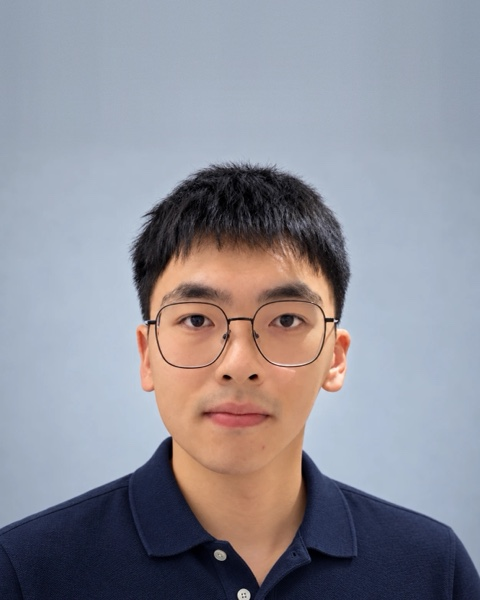
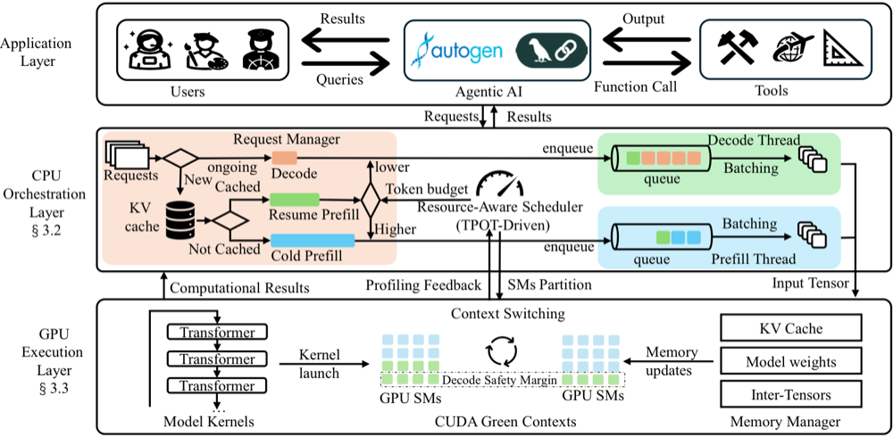
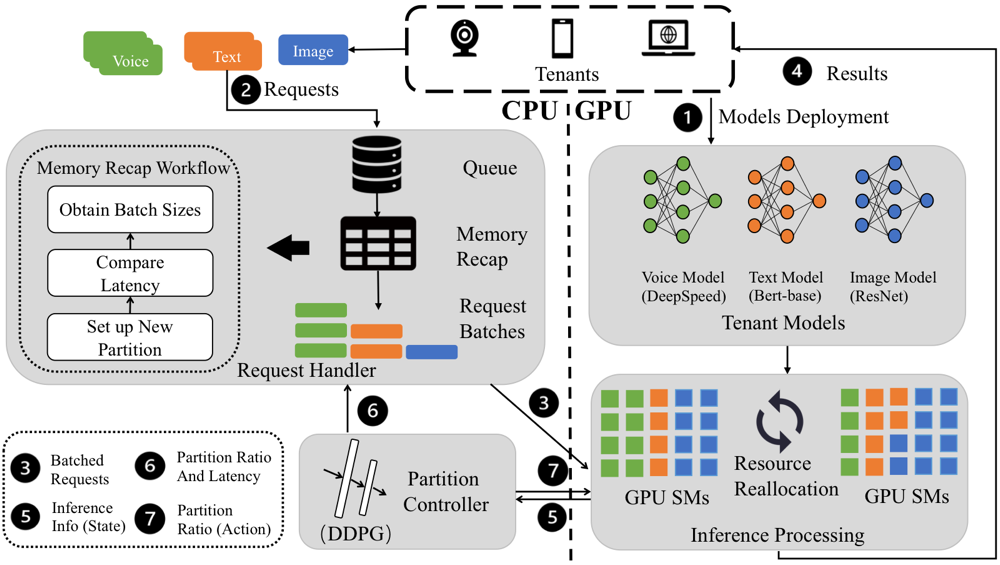
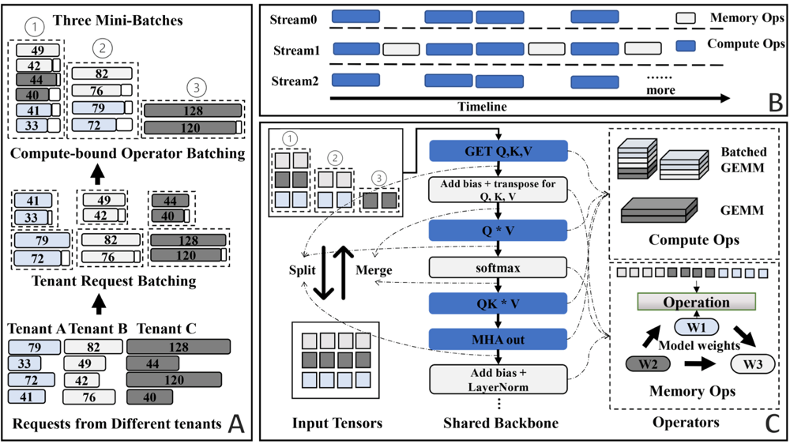
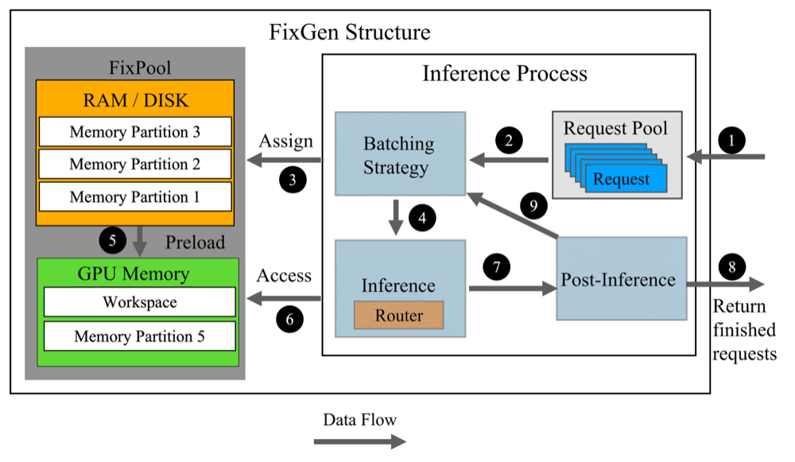
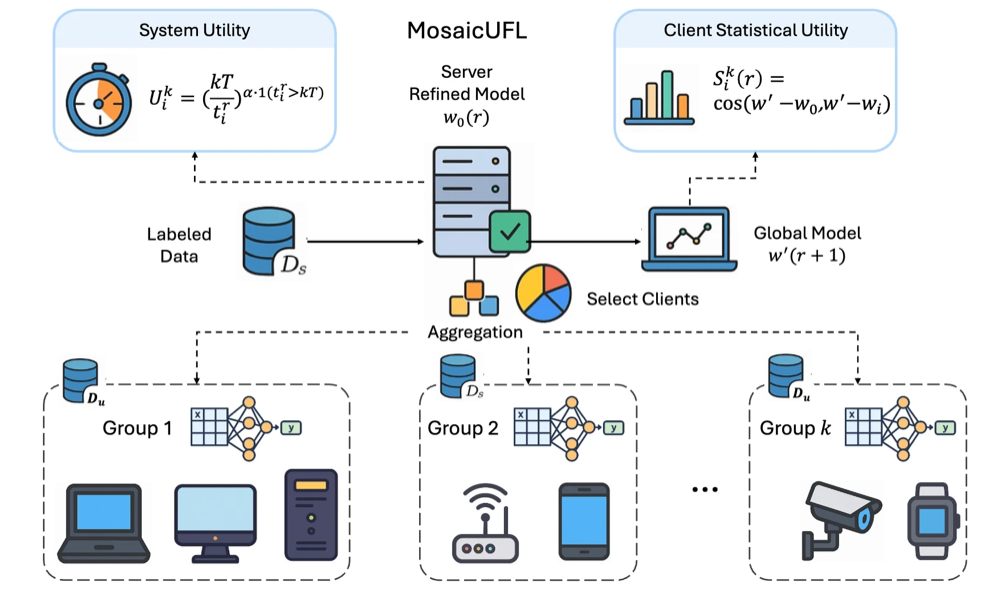

Multi-tenant GPU serving
Jointly deciding how much GPU each tenant gets and how its requests are batched, with performance isolation between concurrent Transformer workloads.
TPDS '26ICPP '23
PhD Candidate · Systems for ML
I design and build efficient AI inference serving systems for LLMs, agents, and multimodal models.
I am a final-year PhD candidate at the University of Sydney, advised by A/Prof. Dong Yuan. My research is on the design and implementation of efficient AI inference systems: runtime scheduling, resource management, and execution of LLM-based agents and multimodal models on heterogeneous computing platforms.

Modern AI workloads share GPUs that were never designed to be shared. I study how a serving runtime should schedule, batch, and isolate competing requests so that every workload meets its latency target without wasting compute or memory.
Jointly deciding how much GPU each tenant gets and how its requests are batched, with performance isolation between concurrent Transformer workloads.
Algorithm-system co-design for LLM agents, mixture-of-experts, and multimodal models on consumer-grade and private machines, mixing online and offline requests.
Serving vision-language-action policies for robots and edge platforms: several policies sharing one GPU, batching around control deadlines, and speculative decoding that preserves task success.
The University of Sydney & Konnext Pty Ltd
I lead an industry-partnered team building a privacy-preserving smart-home platform that runs entirely on local hardware. Modular agent workflows combine retrieval-augmented generation, long-term memory, adapted small language models, and reliable device control.
Delivered to the industry partner for customer operation.
Western Sydney University
As a Research Assistant, I study how online and offline AI inference can share one NVIDIA Jetson onboard a satellite. I characterise latency, batching, power, and thermal behaviour under changing orbital energy constraints, and design runtime policies that protect urgent requests.
Building an onboard Jetson prototype evaluated for timeliness, energy use, and thermal limits.

AgentServe: Algorithm-System Co-Design for Efficient Agentic AI Serving on a Consumer-Grade GPUfirst author
IEEE Transactions on Computers · DOI

Joint Optimization of Resource Allocation and Request Batching for Multi-Tenant Inference Serving on GPUfirst author
IEEE Transactions on Parallel and Distributed Systems, 37(1), 287–303 · DOI

ITIF: Integrated Transformers Inference Framework for Multiple Tenants on GPUfirst author
52nd International Conference on Parallel Processing, 112–121 · DOI

A Hybrid Online and Offline Requests Inference Serving System for LLM in Private Computer Environment
IEEE Transactions on Computers, 75(3), 888–900

MosaicUFL: A Fine-Grained Unlabeled Client Selection Framework for Efficient Federated Learning
IEEE International Parallel and Distributed Processing Symposium, 693–706
Full list on Google Scholar →